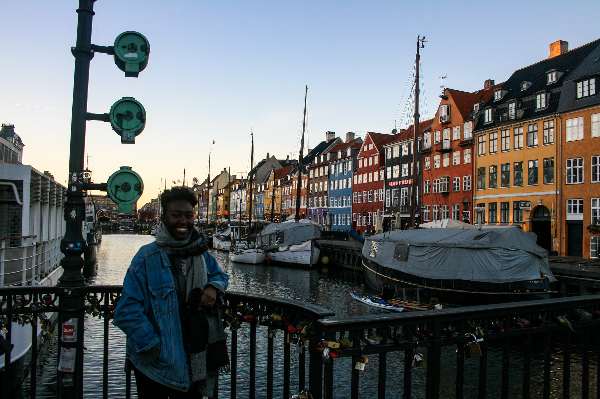
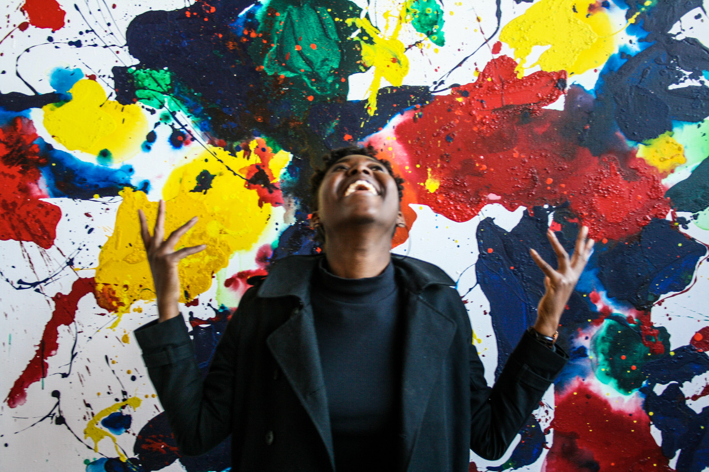

My first week in Europe wasn't exactly the best. The first day I caught a sore throat, by day two I had a pretty horrible cough, and by day three I couldn't get out of bed. I remember lying there, wishing that I was back home, eating some home made chicken noodle soup and having a sick movie day with my more germ-tolerant friends.
Day four rolled around and I was barely able to get a full sentence out without erupting into a fit of coughing, but I decided that I needed to get out and do something. Enough feeling sorry for myself. There were welcome activities for the students new to Copenhagen, and that particular night was bowling night.
Bowling wasn't anything special but in the grand scheme of things it was one of the best nights in Europe, because that's when I met Lex.
We ran through the generic get to know you stuff pretty quickly: I found out that Lex went to school at UPenn, was specializing in sustainability, and had bounced around the States through elementary and high school. Our taste in music was similar, she made more than a few witty comments, and her laugh was easy and genuine. Friend material.
Understatement.
Later that week we met up again and hit some of Copenhagen's landmarks: Rundetaarn (The Round Tower) and Nyhavn. I was still dying, but we had made plans and I was determined not to bail on my first real friend. When we met up I told her I still wasn't 100%. "I'm not normally this quiet, but I still -" cough attack. I was a bit embarassed, but she just laughed, told me it was chill, then launched into an explanation of her love for cacti salsa.
Fast forward five months, many nights out at Jolene, a trip to Berlin, and numerous hangouts later and I really got to know Lex. I got to know the girl that busted her ass in high school to get into Wharton, then worked even harder once she got there. I got to know the longboarding, Childish Gambino loving, badass queen that Lex is, and if it seems like I'm piling her with compliments, it's because I am. For the sake of not overinflating her ego it's better to praise her in this article than it is to do it in person.
That was what I loved about Lex, that she was the only person I've met that gets to my level of playful cockiness, and damn does she pull it off. I usually wait on bringing out the overly arrogant caricature version of myself until I really know a person, but within a week of meeting her I felt that Lex would appreciate it, because she was the same way. When I made absurdly conceited comments she would roll her eyes and scoff at my ridiculousness. I like to think that most of the time she was laughing on the inside.
The eye roll and laugh combination is one of the many things I'm going to miss about her. Just this afternoon I went with her to the airport to see her off. She's on her way back to the States a few weeks early to surprise her mom in time for Mother's Day. I'm not sure when I'm going to see her next, but I know for a fact that it won't be too long before we cross paths again.
The most important thing that I've learned being away from home is that you don't need an extended amount of time to make a genuine connection with someone. Lex taught me that. In her case, it only took five months to make a lifelong friend. If you're reading this Lex, I'll miss you. Copenhagen won't be the same without you.